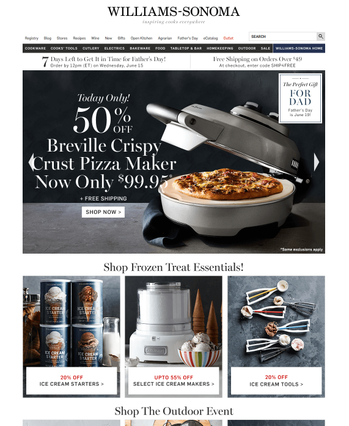
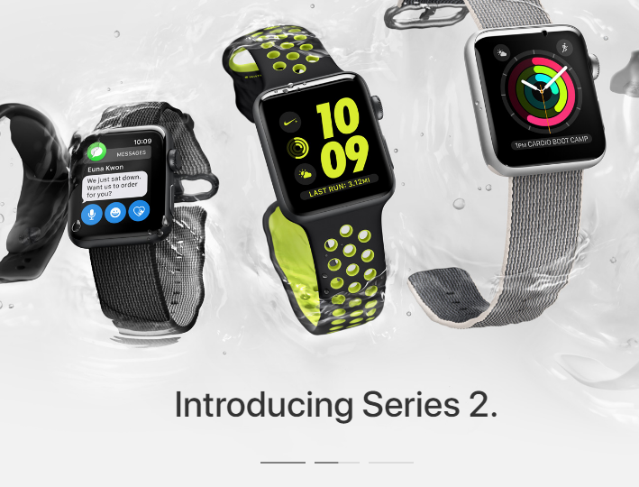
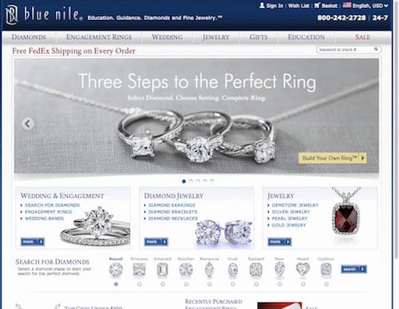
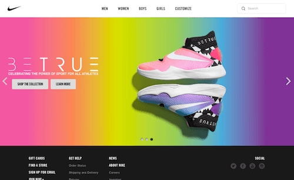
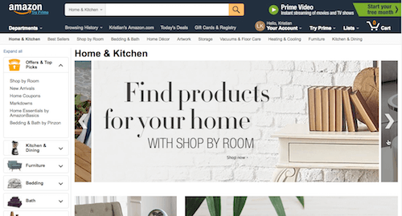
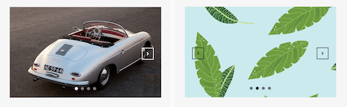
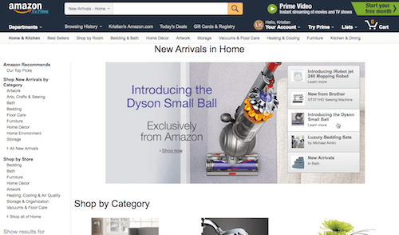
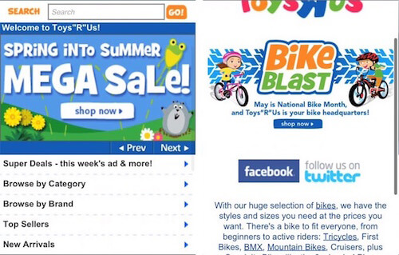
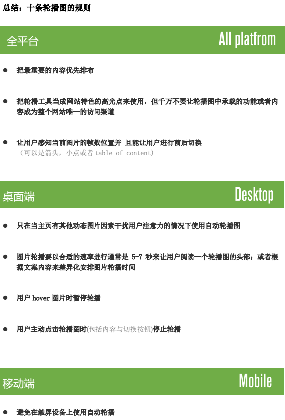
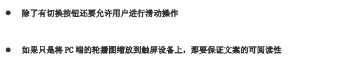

谢晓聪 | 翻译
请问首页中的轮播效果真的能帮到用户吗？还是说，使用轮播是因为他是比较流行且通俗的一种展示工具，可以用来解决庞大组织中谁能占据首屏相对优质的banner位置的争论问题？
我们得到的答案是轮播的确能在首页中起到一定的作用。但是，在实践过程中绝大多数的表现在用户层面看来都是欠佳的。
在Baymard研究协会中，我们进行了大规模可用性测试的实践，在过去的7年中同时兼顾桌面以及移动端的网站测试。测试的结果显示如果我们能遵循10条要求，那么在首页的轮播机制是能够达到令人满意的表现的。很重要的一点，在实现过程中需要区分桌面端与移动端。

大多数用户不会看完所有的首页轮播内容，哪怕是自动轮播。他们不会一直傻傻的待在首页很长时间，实际上很快他们会根据自己的目的以及需求离开首页去往其他页面。所以更加不会老实的聚焦于你的首页轮播区域。
测试期间，在完成一次完整的轮播循环之前，我们测试对象通常会进入到其他页面或者在自动轮播完成一个循环前滚动滑鼠离开进行进一步的浏览操作。而且这还是自动轮播的情况下，很显然，手动轮播只会让轮播停留在第一张直到测试对象去主动切换。另一个潜台词就是没有人可以预测用户下一步到底会看哪 一帧轮播图。
我们之前做的轮播图可用性研究(仔细安排每一帧的展示内 容和顺序)只对少数案例网站效果有一定的提高，这恰恰证 明了一个大问题 — 大部分用户根本不会看这些轮播图，因 此除非用户主动去找不然他们不会注意到那些有用的信息。 所以，即使完善轮播图的细节设计是一个很好的想法，但这 并不能成为用户获取网站信息的唯一方式。
把最重要的内容优先排布
把轮播工具当成网站特色的高光点来使用，但千万不要让轮播图中承载的功能或者内容成为整个网站唯一的访问渠道
自动轮播可以扩散内部的曝光率，当手动轮播只能带来可怜的1%-2%的点击率时，自动轮播却可以带来8%-10%的点击率，相对手动轮播来说数据更好看点。但有一点还是要注意：正如所有的动态图的效果一样，自动轮播的内容会把用户的注意力从静态的内容中吸引过来。因此，我们要设计更高质量以及更具有设计感的轮播内容才能充分利用这种优势。
关于自动轮播的三个细节至关重要，如果我们能注意那么会带来很大的效果提升：
如果轮播得太快那么用户就没有足够的时间看完感兴 趣的轮播图内容；
如果轮播的太快那么用户就会因为不感兴趣的轮播内 容而被骚扰；
轮播图的展示时间应该根据轮播图的文案内容来决 定 — 尼尔森诺曼集团推荐自动轮播图的单帧时长按照1秒 展示3个文案来播放，这就意味着每个轮播图的展示时长 都是独立的；

像苹果轮播这样将展示时间外露出来，从情感设计角度能提高用户的arousl程度，从而使用户的关注范围缩小，提升聚焦程度，为轮播内容带来更高质量的关注度，但是否会继续产生点击行为，那么更多的就取决于轮播图本身的质量了；
Web information seeking and interaction 指出用户鼠标 的位置与他们在当前页面关注的内容有内在联系 — 当 用户鼠标悬停在某一帧轮播图时说明他们对它的内容感兴趣；

当用户悬停时轮播图暂停的第二个理由是防止用户在点击想看的那一帧轮播图时自动轮播到下一帧 — 如果用户意识到他们点击后跳转到一个无关的页面那么用户会 感觉很气恼和失落，并且会不得不重新回到主页然后再次点击原来想要的那一部帧轮播图；
当用户主动点击轮播图按钮来看前一帧或者下一帧内容时，这种行为是有意进行的并且 (当前轮播内容)不应该被改变即使用户决定去查看主页的其他内容；
点击行为是用户的主动响应行为，它是反应用户意图和兴趣的一个强烈的信号。因此，当用户主动对轮播图进行交互时(轮播图)应该停止自动轮播，因为用户极有可能是有意要查看某一帧的内容；
比较常用的设计是在一张五彩斑斓的图片上设置一组小点但这通常会很难识别，把这些点放置在图片外面会好一点；

比较常用的设计手法是箭头。然而，确保这些进行前后切换的箭头有足够的的尺寸和对比度非常关键因为箭头经常被用户忽视(有些设计是用户hover时才出现箭头)；
如果想带来更好的切换按钮体验，可以让功能效果更纯粹直观，那么可以考虑留出前一张以及后一张轮播图的部分内容并配合前后的切换按钮，留出适当的用户预期正如下图中亚马逊做的这样：

当轮播内容的颜色对箭头会造成一定干扰的时候，可以考虑通过颜色的变化保留切换按钮的可识别性：

除了传统的设计样式像是用来感知位置的小点和前后切换的箭头，“table of contents”这种设计样式同样也能起到一样的效果 — 首先，它结合了位置感知和手动切换的控件为一个整体的UI组件。 其次，它能为用户提供了一定的轮播信息线索，让用户知道接下来会看到什么因而可以让用户更有效的进行跨帧的切换：

经过几年来在移动端商业网站的研究学习，我们发现轮播在桌面端与移动端的交互逻辑都有着明显的差异。那么，我们需要知道些非常重要的细节在移动端上：

这里是针对Toy’s’R’Us(玩具反斗城）的移动端一个轮播内容的测试，当测试对象希望点击这个Spring into summer mega sale的轮播内容时，很不幸由于自动轮播间隔时长很短，导致对象误点进入到了bike blast的详情页。
在实践中表明自动轮播并不适合移动端以及触控设备，因为这类型的设备中缺少hover暂停的状态。如果无法提供给用户合适的聚焦，那么也不可能知晓用户是否会有潜在的兴趣以及进一步点击的行为。这是我们基于大量的移动端可用性测试中观察到的结果。
在商业移动端可用性测试中我们提及到，有56%的商业移动端网站在首页采用了轮播图，其中31%的移动网站拥有自动轮播，25%采用的手动轮播。换句话说，近一半有轮播图的移动端网站都开始接受不做自动轮播了。
用户在触屏设备上的操作预期就是滑动来进行导航切换。传统的轮播图操作控件同样重要(如进行前后切换的箭头 和让用户感知位置的小点)。
许多在PC端上使用的轮播图设计稿是直接缩放后在移动端上重复使用这造成在移动端屏幕上许多文案的阅读性较差。
移动端用户对加载较慢的轮播图更没有耐心( 用户在PC端可以边花费1到5秒钟来等待轮播图刷新边浏览网页的导航栏和其他信息，而在移动端有限的屏幕大小下用户只能看到轮播图)。

